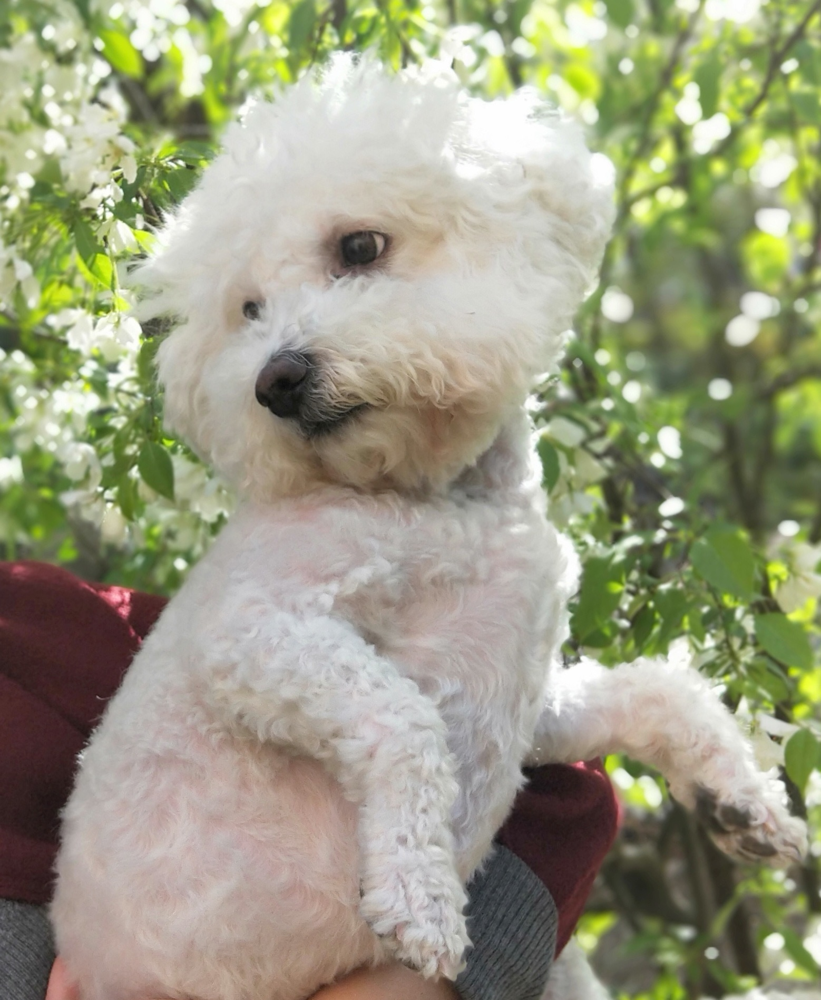

I am an undergraduate researcher interested in systems, security, and formal verification. I am applying to PhD programs for Fall 2027.
Investigating how TLB shootdowns scale on large multicore systems. The project explores topology-aware IPI propagation strategies in the Linux kernel and evaluates their performance across hardware platforms and workloads.
Working toward formalizing concurrent eBPF semantics in F* and building an interpreter for exploring concurrent executions.
Collaborating on the CHERIoT network stack, a compartmentalized network stack for capability-based embedded systems.
Broad interests in systems, security, and formal verification (still investigating!).
I'm fascinated by physics, especially relativity. In my free time, I enjoy drawing and creating art. I love dogs.

In loving memory of Pompom
Name in Chinese: 绒球 (Rong Qiu)
January 28, 2012 – December 29, 2025
My beloved companion who brought joy to every day.